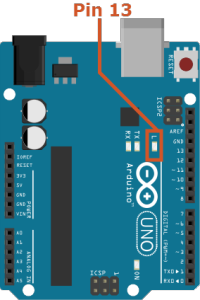

For months, we’ve been posting tutorials to unleash your Arduino projects and provide all C++ power to Arduino projects with multiple classes and files. But not until we were on a workshop for newbies, we realized we have been missing the basics on how to use biicode to program your arduino.
So let’s get started, Biicode is a client interface aplication (CLI) and to use it open the Terminal of your computer.

biicode technology gives you several advantages to richen your Arduino experience:
- Save your project in different folders for a better organization.
- Reuse yours and other user´s code. Reuse made easy: just #include the file you need and you get it. No more copy and paste files from project to project or dowloading zip files from tutorials.
- This is a simple and fast way to compile and upload your code to your Arduino.
- Use your favorite IDE or text editor, we also provide Eclipse integration.
- We are hosting adafruit, sparkfun and many other libraries, you won’t need to download and install libraries in your SDK anymore.
1. How to program your arduino with biicode
Installing biicode and Arduino tools
Download and install biicode, then make sure it is installed:
1 | ~$ bii --version |
Then, install a group of tools with the following command. Open you terminal write:
1 | ~$ bii setup:arduino |
Create Arduino projects
1 | ~$ bii init myproject |
Then we can use the new command to create some folders and a “Simple Blink” Arduino main file. You can do it manually too.
1 2 | ~$ cd myproject ~/myproject$ bii new myuser/myblock --hello=arduino |
1 2 3 4 5 6 7 | +-- myproject | +-- bii | +-- blocks | | +-- myuser | | | +-- myblock | | | | +-- main.cpp | +-- deps |
Define your board
Define your Arduino board using arduino:settings command. We are using an Arduino Uno but use the /o option to show a list of the default boards, even though any board is welcomed!
1 2 3 | Enter SDK path (/../biicode_env/arduino-1.0.6): [ENTER] Enter board (/o list supported options):uno Using arduino port: COM4 |
Upload your program to the Arduino
Now, build and upload the blink to your Arduino.
1 2 3 4 5 6 7 8 9 10 11 12 13 14 15 16 | ~/myproject$ bii arduino:build ... [100%] Built target myuser_myblock_main ~/myproject$ bii arduino:upload ... Writing | ################################################## | 100% 0.00s avrdude.exe: 0 bytes of eeprom written avrdude.exe: safemode: Fuses OK avrdude.exe done. Thank you. [100%] Built target myuser_myblock_main-upload Upload finished |

2. Difference between .ino and .cpp blink
First, compare both main files. There are only two differences, the first include and the extension of the files. As you will see, this pair of differences will bring you lots of advantages.
main.cpp
1 2 3 4 5 6 7 8 9 10 11 | #include "Arduino.h" int led = 13; void setup() { pinMode(led, OUTPUT); // initialize the digital pin as an output. } void loop() { digitalWrite(led, HIGH); // turn the LED on (HIGH is the voltage level) delay(1000); // wait for a second digitalWrite(led, LOW); // turn the LED off by making the voltage LOW delay(1000); // wait for a second } |
main.ino
1 2 3 4 5 6 7 8 9 10 | int led = 13; void setup() { pinMode(led, OUTPUT); // initialize the digital pin as an output. } void loop() { digitalWrite(led, HIGH); // turn the LED on (HIGH is the voltage level) delay(1000); // wait for a second digitalWrite(led, LOW); // turn the LED off by making the voltage LOW delay(1000); // wait for a second } |
3. How to use the code on biicode?
Usual “blink” project blocks your Arduino, so it’s obstructed to do anything else but blinking. We are #including here a “blink” utility class that blinks without delays or blocking your Arduino. Reuse from fenix’s blink library, copy the following code containing the new blink into the main.cpp file.
main.cpp
1 2 3 4 5 6 7 8 9 10 | #include "Arduino.h" #include "fenix/blink/blink.h" Blink my_blink; void setup() { //pin = 13, interval = 1000 ms my_blink.setup(13, 1000); } void loop() { my_blink.loop(); } |
Execute the command below to find unresolved dependencies and retrieve necessary files from servers:
1 | ~/myproject$ bii find |
Now can now build your firmware and upload it to your Arduino:
1 2 3 4 5 6 7 8 9 10 11 12 | ~/arduino_hello_project$ bii arduino:upload ... Writing | ################################################## | 100% 0.00s avrdude.exe: 0 bytes of eeprom written avrdude.exe: safemode: Fuses OK avrdude.exe done. Thank you. [100%] Built target myuser_myblock_main-upload Upload finished |
That’s it, if you see that output fenix’s blink.h was downloaded and uploaded in your project! You can check the deps folder, the blink.h code is there.
4. Next steps
Many tutorials are available on this blog’s Arduino projects with biicode.
Hope you enjoy this basic unleash your Arduino Projects Tutorial and, as always, we look forward to hear what you think. Just click on the sidebar button to try biicode and check our docs, forum, Stackoverflow tag for questions and answers.
Related Posts